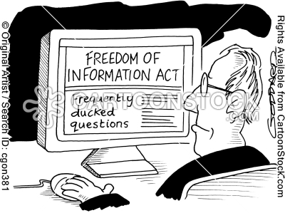

Memacu Kreatifitas di Era Keterbukaan
April 2010
The world is flat - Thomas L Friedman
Anda mungkin sudah tahu Seth Godin? Ia adalah seorang penulis, marketer, dan pembicara yang sangat populer. Blognya, yang beralamat di sethgodin.typepad.com adalah salah satu blog terbaik versi Times.com, dan ia mengupdatenya setiap hari. Ya, setiap hari ia mempublikasikan ide-idenya yang inspiratif dan berkualitas. Dan semuanya gratis, semua orang dapat menikmatinya.

Tapi, walaupun tulisan-tulisan berkualitasnya gratis, Seth Godin tetap menjadi penulis yang banyak ditunggu karyanya, yang paling diperbincangkan ide-idenya, dan yang paling mahal bayaran untuk menjadi seorang pembicara. Ini adalah salah satu prinsip baru dalam era digital hari ini. semua orang dapat berkeratifitas, dan membuat berbagai karya dengan keleluasaan untuk memproduksinya dengan sangat mudah. dan itu bukan hanya menguntungkan bagi orang lain yang menikmatinya, tapi juga menjadi pendongkrak personal branding bagi si pembuat.
Ada contoh lain, yang lebih sederhana dan baru. Beberapa waktu lalu, mas Ilman Akbar membuat ebook tentang passion. Saya mengetahui ini di twitter. Ia membuat hashtag bagi siapa saja yang mau membicarakan ebook ini di Twitter. Dan sejak peluncuran ebook ini, banyak respon positif yang datang dengan sangat cepat. Dan itu baru saya lihat di Twitter saja. Dan saya lihat, yang dilakukan mas Ilman cukup sederhana. Membuat ebook pdf, lalu memasarkannya di social media. Semuanya gratis. Dan semua orang bisa melakukan itu.
Don Tappscot, dalam bukunya Wikinomics mengatakan bahwa saat ini adalah era dimana ekonomi dikendalikan bukan oleh uang, tapi dipimpin oleh komunitas yang saling percaya, saling berkontribusi, dan membuat berbagai produksi kreatif yang didistrubusikan dengan sangat murah atau bahkan gratis. Ini memang menjadi bagian dari sifat manusia. Manusia adalah makhluk sosial. Mereka senang bekerja dalam tim. Dan mereka juga ingin berinovasi dan berkreatifitas.
Dan ketika kita berbicara tentang kreatifitas, ini tidak ada hubungannya dengan IQ yang tinggi, seseorang yang bisa menguasai 5 bahasa di usai tujuh tahu, atau nilai ujian yang tak pernah dibawah 100. Kreatif berbeda dengan integensia. Menjadi kreatif berarti menjadi bagian dari pemecah masalah. Menjadi kreatif berarti memberikan solusi, dengan cara yang tidak olah banyak orang lain pikirkan. Dan pada dasarnya semua orang bisa melakukan ini. Manusia adalah mahluk yang kreatif.
Kesuksesan Linux, Mozilla, atau bahkan Wikipedia memberikan beberapa pelajaran berharga untuk kita. Begitu banyak perubahan dengan gaya hidup digital kita saat ini, membuat adanya prinsip baru yang berlaku tentang bagaimana menciptakan kreatifitas yang dapat bertahan lama. Yaitu era dimana keterbukaan, kolaborasi, sharing, dan bertindak global menjadi kekuatan yang fantastis.
Dan yang penting adalah, Ini berarti memungkinkan siapa saja –dari mulai anak SD sampai dengan profesional dapat melakukan sesuatu yang pantas dibicarakan di media. Sebuah aksi kreatif.
Sesuatu yang sebelumnya tak mungkin
Saya sudah sejak lama berandai-andai untuk bisa belajar di universitas seperti stanford atau MIT. Dan saya rasa, begitu pula dengan banyak dari kita yang menginginkannya. Dulu, seorang anak di desa yang terpencil bisa dianggap gila kalau bermimpi seperti ini. Tapi sekarang, kita semua dapat menikmatinya.
Kita dapat mendengarkan professor didalam kelas seperti di MIT, mirip dengan yang diterima oleh mahasiswanya disana. Caranya sederhana dan murah, kunjungi saja ocw.mit.edu, dan anda akan membaca..
“Welcome to MIT’s OpenCourseWare, a free and open educational resources (OER) for educators, students, and self-learner around the world. MIT OpenCourseWare (MIT OCW) suports MIT’s mission to advance knowledge anda education and serve the world in the 21st Century.”
Di situs ini ada banyak video yang direkam langsung saat proses belajar, ditambah dengan presentasi, handbook, soal-soal latihan dan jawaban. Dari berbagai fakultas, dari mulai aeonautics sampai zoology, dari salah satu universitas terbaik di dunia. Semuanya gratis, semuanya dapat di download oleh siapa saja.
Situs ini terus berkembang, dan saya yakin akan terus berkembang. Bahkan semakin banyak orang yang ikut berkontribusi. Karena situs ini memang dibutuhkan. MIT OCW adalah salah satu contoh dari tindakan nyata sebuah prinsip openness, keterbukaan. Membuat sesuatu yang sebelumnya tak mungkin dilakukan, menjadi sangat realistis.
Era Opennes : Semua Diuntungkan
Tidak peduli anda menyadarinya atau nggak, kita sedang hidup di era opennes, era keterbukaan. Pertama yang harus kita ingat agar kita bisa menjadi bagian dari era ini adalah bahwa, jadilah orang yang dermawan. Jadilah orang yang baik. Berikan sebanyak-banyaknya pada dunia, jangan hanya berharap menerima sebanyak-banyaknya.
Ini bukan hanya petuah Pa Harfan di film Laskar pelangi, tapi ini juga sudah menjadi bagian dari kunci keberhasilan dalam dunia yang semakin datar seperti sekarang. Menjadi yang dermawan menjadi salahsatu kunci keberhasilan dalam produk kreatif.
Mensharing ide, berbagi pengetahuan, menceritakan pengalaman, dan membantu orang lain adalah bagian dari pengendalian dunia web. Semua orang akan suka dengan siapapun yang mau berbagi, dan mereka akan memberitahukan teman-temannya yang lain kalau memang anda adalah orang yang kredibel di bidang anda. Ini menjadi senjata bagi anda sebagai personal branding.
Bukan Sekedar Membangun Kreatifitas
Pranav Mistry adalah seorang yang cukup dikenal dunia sekarang. Ia menciptakan teknologi yang membuat kita dapat berinteraksi dengan dunia digital dengan cara baru. Dan yang lebih menarik lagi Ia memberikan lisensi open source pada code yang ada dalam teknologi yang ia ciptakan.
Johnny Lee juga seorang peneliti dalam bidang interaksi komputer dan manusia. Ia biasa bekerja di lab dengan video, dan menguploadnya ke youtube. Dalam waktu seminggu, pekerjaannya sudah dilihat oleh ratusan ribu orang diseluruh dunia.
Inilah salah satu dampak kombinasi dari era keterbukaan dan akses infrasruktur yang murah. Mereka yang ikut bergelut di bidang media internet tidak bermain-main atau bercanda. Mereka bukan hanya memberikan kontribusi dalam ilmu pengetahuan, mereka ikut menjadi bagian dari aktivis di era kreatif. Mereka menjadi bagian yang mengubah dunia. Mereka memberikan yang terbaik yang mereka bisa untuk seluruh dunia. Dan kita juga bisa seperti mereka, dengan cara kita sendiri.
Teknologi web yang terus berkembang membuat kita jauh lebih mudah untuk berbagi, membuat komunitas, dan memproduksi karya-karya kreatif kita. Semuanya bahkan gratis, mudah digunakan, dan bukan alat-alat murahan. Google, youtube, wikipedia, kaskus, telah memberikan kita tools untuk membantu dan memacu kita melakukan lebih banyak aktifitas kreatif dan produktif.
Dan yang harus kita lakukan hanyalah berpikir lebih kreatif, dan membuat produk atau karya inovatif, membuat tulisan-tulisan bermanfaat, membuat blog yang ikut berkontribusi di bidang ilmu pengetahuan, atau apapun itu. lalu, beritahu dunia dengan menyebarkannya di internet.
Kalau kita melakukan hal-hal yang baik, cepat atau lambat jalan kemudahan akan datang dengan sendirinya. Tidak percaya? Percayalah! hhe..
Semakin kita produktif, semakin kita menjadi terpacu untuk terus berkarya. Dan dengan sendirinya orang-orang akan memberi masukan terhadap karya-karya yang kita buat. Dan dengannya, kita bisa lebih kreatif lagi.
So, selamat datang di era baru! Jika anda belum menemukan bidang kreatif mana yang anda sukai, teruslah mencari! Jangan menyerah! Satu-satunya cara untuk tetap bisa dianggap disini adalah dengan menjadi orang yang baik, dan yang kreatif! Kita orang Indonesia juga pasti bisa!
Jadilah Kreatif, Jadilah orang yang baik! :)